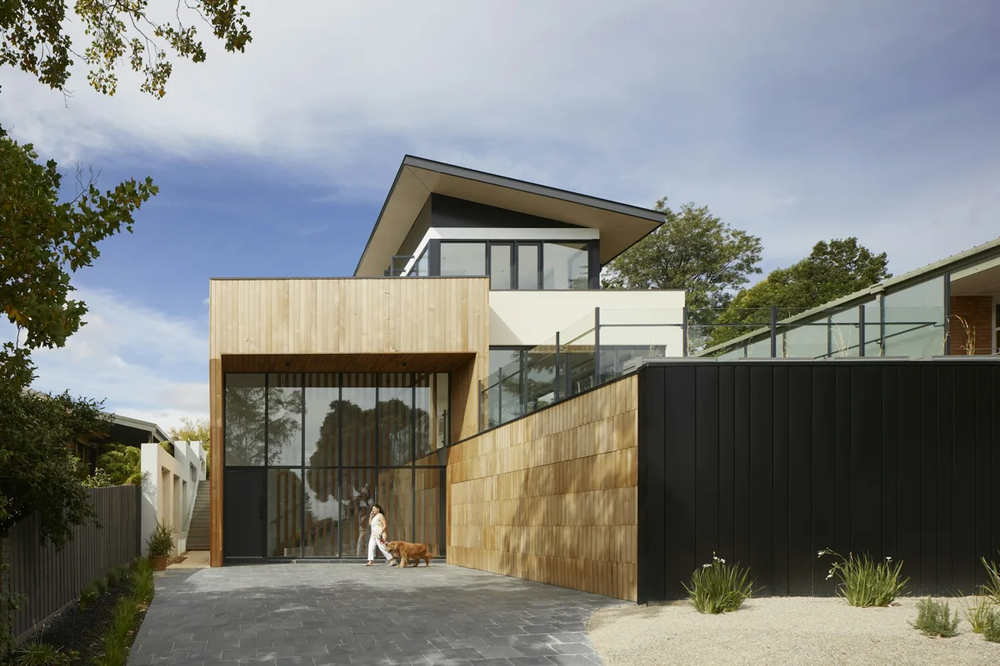
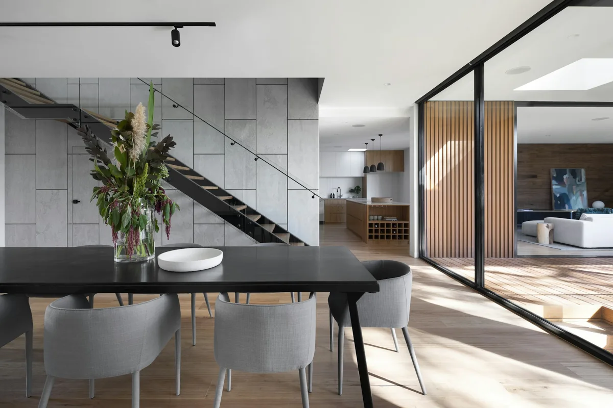
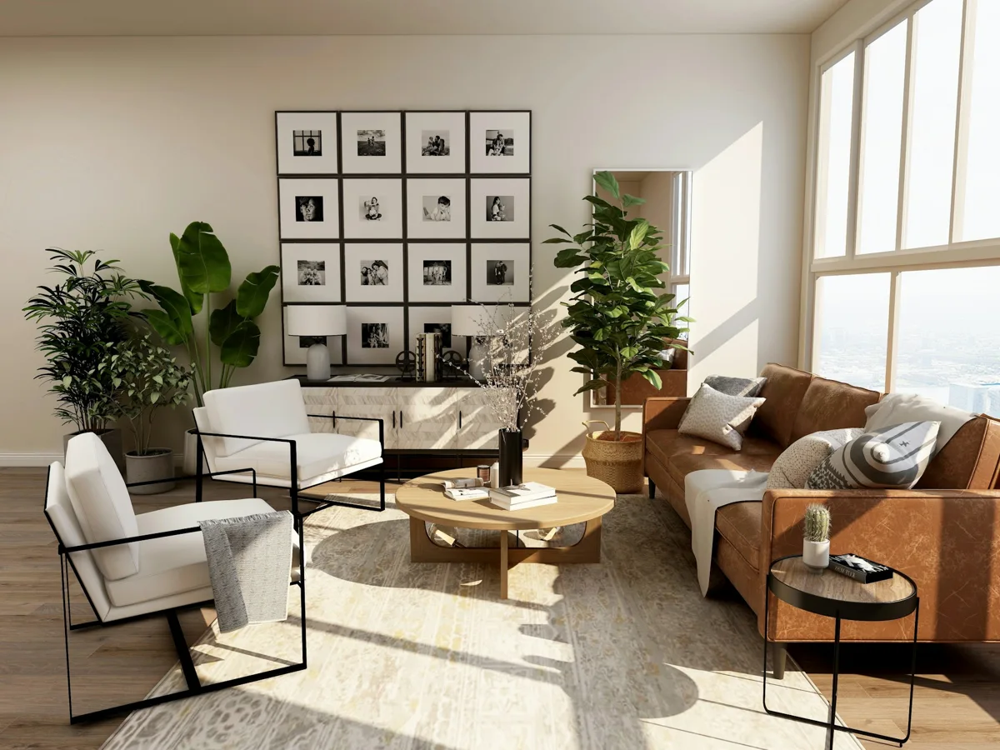

PEREIRA, RISARALDA / VIDRIO A MEDIDA
Vidrio que
transforma
tus espacios.
Soluciones en vidrio, espejos, aluminio arquitectónico y acabados a medida en Pereira.
Cotizar mi proyectoEnvíanos fotos y medidas por WhatsApp.
SOLUCIONES PARA CADA ESPACIO
01 / LO QUE PODEMOS HACER
Todo empieza
con el espacio.
Una división, un reflejo, una apertura.
Encuentra la solución para tu idea.
01Divisiones de baño
Vidrio templado para crear espacios limpios, modernos y visualmente más amplios.
02Espejos
Soluciones decorativas y funcionales alrededor de las dimensiones de cada espacio.
03Fachadas
Vidrio y aluminio integrados a espacios comerciales y residenciales.
04Aluminio arquitectónico
Soluciones para puertas, ventanas y diferentes aplicaciones arquitectónicas.
05Acero inoxidable
Elementos que combinan estructura, funcionalidad y acabado.
06Marquetería
Marcos para fotografías, arte y piezas decorativas.
UNA NUEVA FORMA DE HABITAR
El vidrio
cambia todo.

Una buena solución en vidrio no solo divide espacios. También cambia la forma en que entra la luz, se percibe la amplitud y se integra cada ambiente.
02 / POSIBILIDADES
Inspiración para
transformar tu espacio.
Imagina lo que podrías hacer.
Imágenes de referencia para la previa.
No corresponden a trabajos de la empresa.
AMPLITUD QUE SE SIENTE
Un baño puede
sentirse completamente
diferente.
El vidrio ayuda a mantener la amplitud visual y crea una separación limpia entre los espacios.
Cotizar una divisiónEnvíanos una foto y medidas aproximadas.
REFLEJOS CON INTENCIÓN
Espejos que forman
parte del espacio.
Baños · Habitaciones · Salas
Comercios · Decoración
LÍNEAS QUE CONECTAN
Dos materiales.
Una misma arquitectura.
Aluminio
Define líneas, estructuras y aperturas.
Vidrio
Deja entrar luz y conecta los espacios.
03 / HABLEMOS DE TU IDEA
Cotizar puede ser
muy sencillo.
El primer paso no necesita planos.
Solo una idea y una conversación.
- 01
Toma una foto
Muéstranos el espacio donde quieres realizar el trabajo.
- 02
Envía las medidas
No tienen que ser perfectas para iniciar la conversación.
- 03
Cuéntanos tu idea
Envíanos una referencia si tienes un resultado en mente.
- 04
Escríbenos
Hablemos directamente por WhatsApp.
MARCOS Y VIDRIOS OROZCO
De la idea al
espacio terminado.
Estamos en el centro de Pereira, cerca al lago. Trabajamos con vidrio, espejos decorativos, aluminio arquitectónico, acero inoxidable y marquetería para espacios residenciales y comerciales.
- Cuéntanos qué necesitas
- Revisamos el espacio
- Definimos la solución
- Llevamos el proyecto a la realidad
Los detalles del proyecto se acuerdan al conversar.
EL VALOR DE LO BIEN PENSADO
El resultado está
en los detalles.
Cada espacio exige una solución diferente. Por eso el proyecto empieza entendiendo qué quieres hacer y dónde lo quieres hacer.
Acabado / Instalación

PIEZAS QUE MERECEN SU LUGAR
También hacemos
marquetería.
Marcos para fotografías, arte y piezas que quieres conservar o destacar.
Consultar por WhatsAppTU ESPACIO. TU IDEA. EL SIGUIENTE PASO.
¿Qué espacio
quieres transformar?
Envíanos una foto, unas medidas aproximadas
y cuéntanos qué tienes en mente.
Pereira, Risaralda
CERCA DE TU PRÓXIMO PROYECTO
Encuéntranos
en Pereira.
Cra. 6 #26-69Pereira, Risaralda, ColombiaCómo llegar